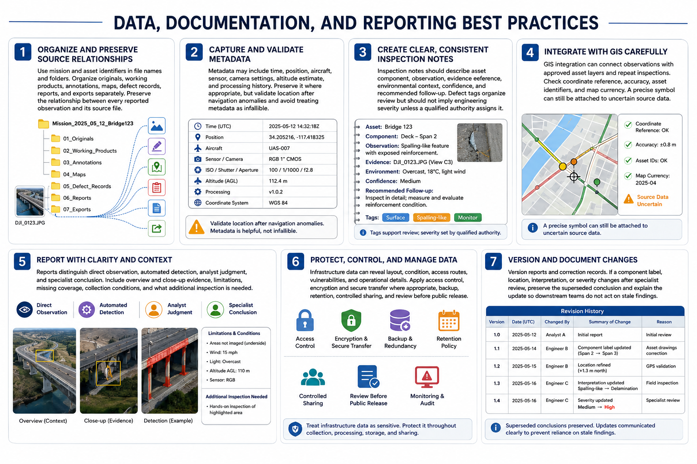

Data Management and Reporting
Connecting to LMS... Progress: in progress

Narration
Use mission and asset identifiers in file names and folders. Organize originals, working products, annotations, maps, defect records, reports, and exports separately. Preserve the relationship between every reported observation and its source file.
Metadata may include time, position, aircraft, sensor, camera settings, altitude estimate, and processing history. Preserve it where appropriate, but validate location after navigation anomalies and avoid treating metadata as infallible.
Inspection notes should describe asset component, observation, evidence reference, environmental context, confidence, and recommended follow-up. Defect tags organize review but should not imply engineering severity unless a qualified authority assigns it.
G I S integration can connect observations with approved asset layers and repeat inspections. Check coordinate reference, accuracy, asset identifiers, and map currency. A precise symbol can still be attached to uncertain source data.
Reports distinguish direct observation, automated detection, analyst judgment, and specialist conclusion. Include overview and close-up evidence, limitations, missing coverage, collection conditions, and what additional inspection is needed.
Infrastructure data can reveal layout, condition, access routes, vulnerabilities, and operational details. Apply access control, encryption and secure transfer where appropriate, backup, retention, controlled sharing, and review before public release.
Version reports and correction records. If a component label, location, interpretation, or severity changes after specialist review, preserve the superseded conclusion and explain the update so downstream teams do not act on stale findings.